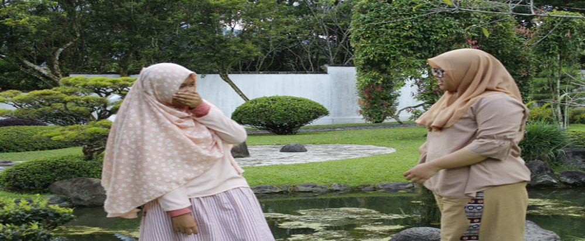

MENYIKAPI MUSUH DALAM KEHIDUPANMoralist apakah mengetahui siapa musuh kita sesungguhnya? Permusuhan berawal dari suatu pertiakaian atau selisih paham yang tidak diselesaikan secepatnya. Sebagai manusia, merupakan hal yang wajar ketika ada pertikaian dan selisih pendapat antara sesama. Yang berbahaya, ketika pertikaian berlanjut menjadi permusuhan karena keegoisan masing-masing, akan terlalu sukar untuk melakukan pendamaian. Lantas, bagaimana kalau keterlanjuran tersebut terjadi? Seharusnya, untuk mengantisipasi permusuhan haruslah dengan cara yang bijaksana agar tidak serba salah. Salah satunya dengan rela mengalah dan mengaku salah (walau sebenarnya bukan kita yang salah) dan mengucapkan kata maaf terlebih dahulu. Bahkan moralist juga harus memaafkan orang yang berselisih paham dengan moralist. Ajaklah orang yang lebih dewasa dan bersikap netral agar membantu penyelesaian masalah yang terjadi. Masalah dimaafkan atau tidaknya, itu sudah menjadi urusan orang tersebut menyikapinya. Yang penting, rekonsiliasi sudah kita lakukan. Permusuhan yang sudah lama terjadi menyebabkan kecemburuan dalam hal apa pun. Musuh moralist akan merasa senang ketika mereka lebih unggul dari pada moralist. Bahkan mungkin moralist juga sama. Ketika serangan fisik maupun mental dilakukan musuh terhadap moralist, janganlah kita membela diri. Karena kedewasaan dan kemurahan yang sesungguhnya adalah membalas kejahatan musuh dengan kebaikan. Kalau mereka menyebar fitnah tentang moralist, coba moralist balas dengan berbicara yang baik tentang musuh kita kepada orang lain. Istilahnya, ketika orang menampar pipi kananmu, berikan pipi kirimu. Ketika orang melemparmu dengan batu, lemparlah kembali dengan roti. Jangan takut harga diri kita hancur karena sudah diinjak-injak oleh musuh kita. Tetapi jadilah dewasa dan bijaksana. Maka, semua orang akan melihat siapa yang layak dikatakan baik dan bermoral. Bahkan musuh kita sekali pun akan merasa malu ketika kita bersikap lebih dewasa dan bijaksana dari pada mereka. Kunci dari memaafkan musuh selain tulus dan ikhlas memaafkan adalah melupakan semua kesalahan dan kejahatan yang telah musuh kita perbuat. Hal ini penting dilakukan mencegah munculnya kembali kebencian dalam hati ketika berjumpa dengan musuh kita. Walau kita sudah memaafkan, akan terasa sulit memperbaiki relasi ketika kita masih mengingat kejahatan mereka terhadap kita. Hal yang terakhir yang harus kita lakukan adalah, menjaga jarak dalam setiap hal yang sekiranya akan menimbulkan permasalahan lagi. Sebagai contoh, kalau dulu kita bermasalah dengan orang sampai menjadi musuh karena uang (hutang dan sebagainya), janganlah lagi kita ikut campur atau berurusan tentang uang dengan mereka. Hal ini penting dilakukan untuk menjaga hubungan yang telah kembali baik. Maka dari itu, lebih baik jaga jarak dalam segala hal untuk menghindari pemusuhan dalam segala hal. |


MORAL BANGSA INDONESIA
5S: SENYUM, SALAM, SAPA, SOPAN, DAN SANTUN
|  | MORAL CHALLENGE? Yuk Mulai..!! |
#8 |
DIAM DAN TERSENYUMLAH SAAT DISAKITIDiam dan tersenyumlah ketika orang lain menyakiti kita! Diam merupakah pembuktian kedewasaan seseorang. Tersenyum merupakan ketulusan dan kerelaan disakiti! |
Tentang Kami
Inspire The Moral (Spiral) merupakan website yang bertujuan untuk menginspirasi semua orang mulai dari yang muda sampai yang tua. Dan juga memberikan Moral Challenge untuk Melakukan aksi nyata yang bermoral dan memberi inspirasi serta teladan bagi banyak orang. Selengkapnya.. |
Ikuti Kami |